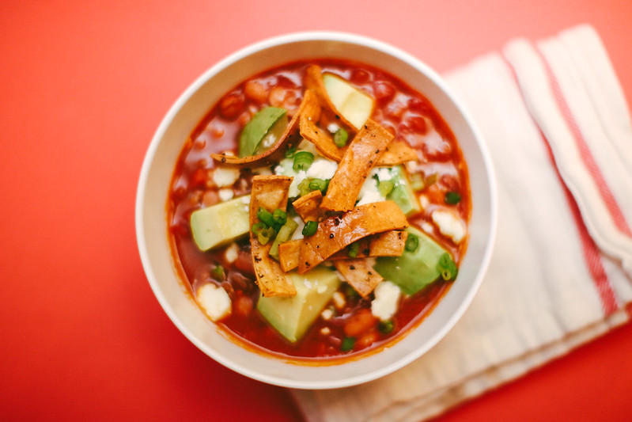

(Fake) Beef Chili-Frito Bowls

"Beef & Pinto Bean Chili" by basheertome is licensed under CC BY 2.0
Why This Recipe Works
We developed this recipe using Frontera Red Chile Enchilada Sauce and Impossible Beef. Serve with sour cream and hot sauce.
Ingredients
- 1 pound Impossible Beef
- 6 scallions, white parts chopped, green parts sliced thin
- 1/2 teaspoon pepper
- 2 tablespoons chili powder
- 3 garlic cloves, minced
- 2 teaspoons ground cumin
- 2 (15-ounce) cans pinto beans, rinsed
- 2 cups water
- 1 cup red enchilada sauce
- 4 cups Fritos corn chips
- 4 ounces Monterey Jack cheese, shreeded
Instructions
- Cook "beef," scallion whites, and pepper in Dutch oven over medium-high heat until meat begins to sizzle in its own fat, about 10 minutes. Stir in chili powder, garlic, and cumin and cook until fragrant, about 30 seconds.
- Stir in beans, water, and enchilada sauce and bring to boil, scraping up any browned bits. Reduce heat to medium-low and simmer until slightly thickened, about 10 minutes, stirring occasionally.
- Divide Fritos evenly among 4 bowls. Top Fritos with chili, followed by Monterey Jack and scallion greens. Serve.